Dự án này chủ yếu thực hiện chức năng: sau khi cơ cấu hút lấy M, hướng dẫn M định vị và dán chính xác lên B.
Theo yêu cầu dự án, thiết kế cơ cấu phần cứng như hình dưới, một camera M chụp theo hướng thẳng lên, một camera B chụp thẳng xuống, hai camera chụp khi cơ cấu dừng, khoảng cách cố định. Nền tảng chuyển động của M và camera trên cùng dùng chung trục Y, đầu hút M là nền tảng chuẩn XYθ.
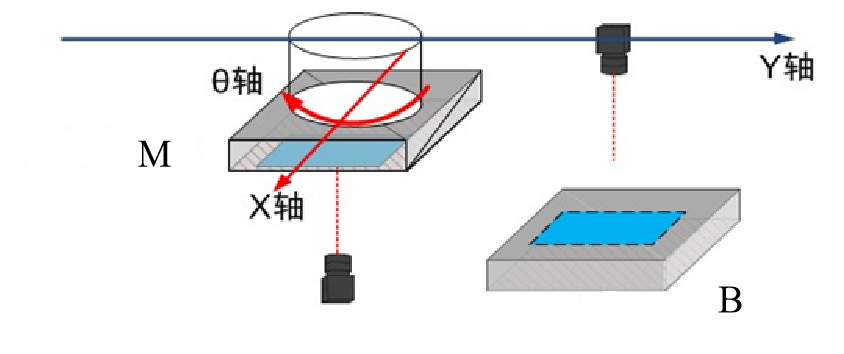
Trong hướng dẫn thị giác thực tế, cần hiệu chuẩn camera M, camera B và cơ cấu đối vị để xác định mối quan hệ chuyển đổi giữa hệ tọa độ camera và hệ tọa độ nền tảng (hệ tọa độ cuối cùng). Trong dự án này, M dùng phương pháp hiệu chuẩn 12 bước, camera B dùng hiệu chuẩn 3 bước theo trục Y + hiệu chuẩn liên kết trung tâm một điểm; sau đó, theo kết quả hiệu chuẩn, thực hiện đối vị đa điểm để ghép M và B.
Vì nguyên lý hiệu chuẩn và đối vị là phổ biến và đã được kiểm chứng, với mỗi dự án chỉ cần chọn điểm hiệu chuẩn và điểm đối vị phù hợp. Trong dự án này, M và B gần giống hình chữ nhật, có tính đối xứng, nên chọn tâm hình học làm điểm hiệu chuẩn và điểm đối vị, kết quả như hình dưới:
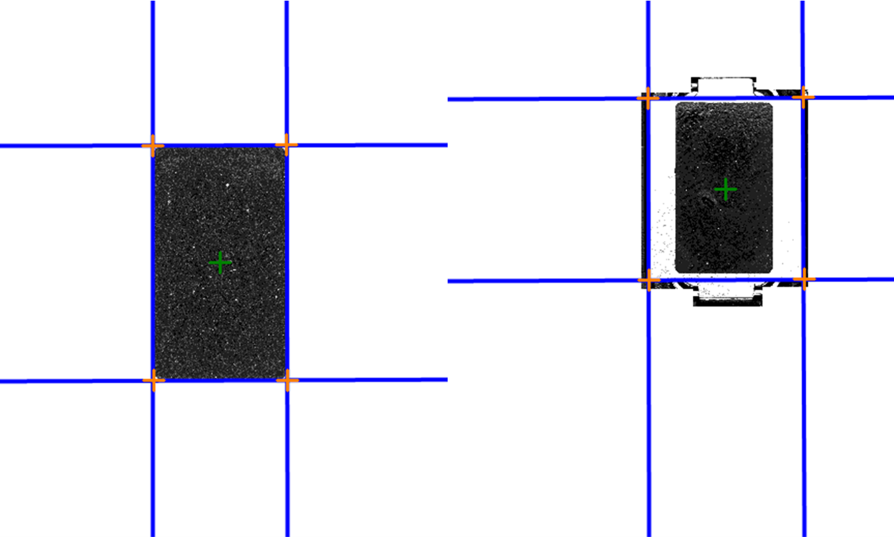
Đối vị là thông qua camera chụp mục tiêu đối vị, lấy tọa độ điểm đối vị trong hệ tọa độ camera, rồi chuyển sang hệ tọa độ nền tảng, tính toán tọa độ cơ cấu cần di chuyển, hoàn thành việc đối vị. Hiệu chuẩn xác định các thông số α, θ và (Tx,Ty). Công thức như hình:
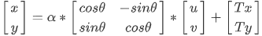
Trong đó (x,y) là tọa độ hệ nền tảng, (u,v) là tọa độ hệ camera, α tỷ lệ, θ góc quay, (Tx,Ty) là khoảng cách giữa gốc các hệ. Đây là mối quan hệ chuyển đổi 2D. Hiệu chuẩn là xác định α, θ và (Tx,Ty).
Với cơ cấu loại XYD, nguyên lý: cơ cấu di chuyển theo lộ trình, camera chụp điểm đánh dấu trên sản phẩm, kết hợp tọa độ di chuyển và tọa độ ảnh, xây dựng ánh xạ giữa hệ tọa độ ảnh và nền tảng.
Vị trí di chuyển theo thứ tự: vị trí ban đầu(0), phải(1), phải dưới(2), dưới(3), trái dưới(4), trái(5), trái trên(6), trên(7), phải trên(8), vị trí ban đầu(0), theo chiều kim đồng hồ(9), ngược chiều kim đồng hồ(10). Tổng cộng 12 bước (11 vị trí). 9 bước đầu là dịch chuyển xác định tỷ lệ và góc, 3 bước sau là quay xác định dịch chuyển.
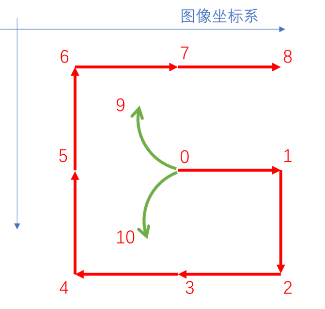
Nguyên lý giống 12 bước nhưng di chuyển khác. Camera B chỉ di chuyển theo trục Y, đi qua vị trí ban đầu, trên và dưới. Chỉ xác định tỷ lệ và góc, không xác định dịch chuyển. Do camera B không quay và không chụp được cơ cấu cuối cùng, nên dùng M và B đối vị xác định trung tâm công cụ “hiệu chuẩn liên kết trung tâm một điểm”.
Vì B chỉ di chuyển theo trục đơn và không quay, gốc hệ tọa độ nền tảng không xuất hiện trong hệ camera B. Chọn 3 vị trí (0/9/16) xác định một hình tròn, tâm là gốc nền tảng trong hệ camera M. Khoảng dịch chuyển là hiệu tọa độ cùng điểm trong hai hệ. Bảo đảm các trục song song dựa vào hiệu chuẩn 3 bước. Điểm chung dùng trung tâm sản phẩm, chụp M lấy tọa độ trong nền tảng, đặt vào B, chụp lấy tọa độ trong hệ camera B, tính khoảng dịch chuyển.
Đối vị là tính toán dịch chuyển XYD/XDY/DXY dựa trên nhiều đặc trưng của đối tượng và mục tiêu trong cùng hệ tọa độ nền tảng, để đối tượng và mục tiêu trùng khớp.
Thực hiện trong “công cụ tính toán đối vị chung”, ví dụ này dùng phương pháp “đối vị đa điểm theo đường thẳng”.
Theo phân tích giải pháp và nguyên lý liên quan, để hoàn thành việc đối vị và ghép M với B, dự án chia thành 5 module chính, gồm 4 module hiệu chuẩn và 1 module đối vị. Nhiệm vụ chính các module như sau:
Sử dụng phương pháp hiệu chuẩn 12 bước, quy trình cụ thể:
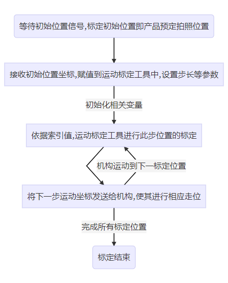
Chi tiết quá trình thực hiện:
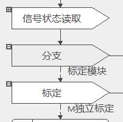
Quy trình tương tự hiệu chuẩn độc lập M nhưng B chỉ di chuyển theo trục Y, chỉ xác định tỷ lệ và góc giữa hệ tọa độ nền tảng và camera B; chạy 3 vị trí. Dịch chuyển giữa các hệ cần thực hiện trong hiệu chuẩn liên kết.
Quy trình:
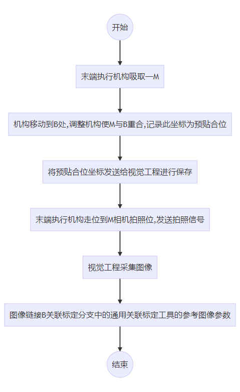
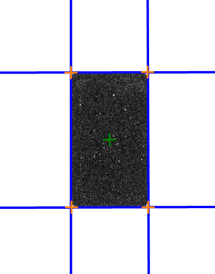
Quy trình:
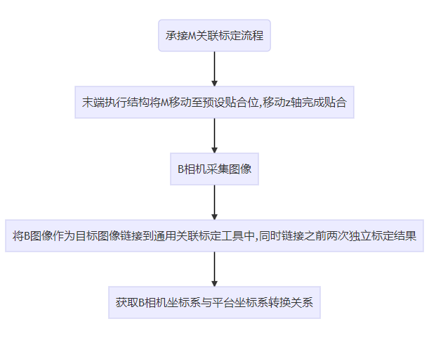
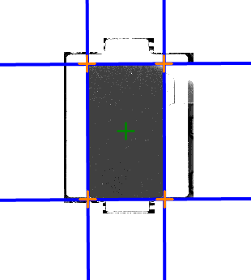
Quy trình đối vị:
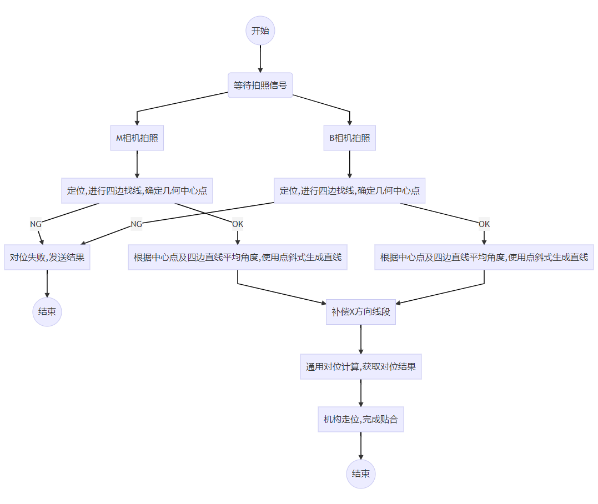
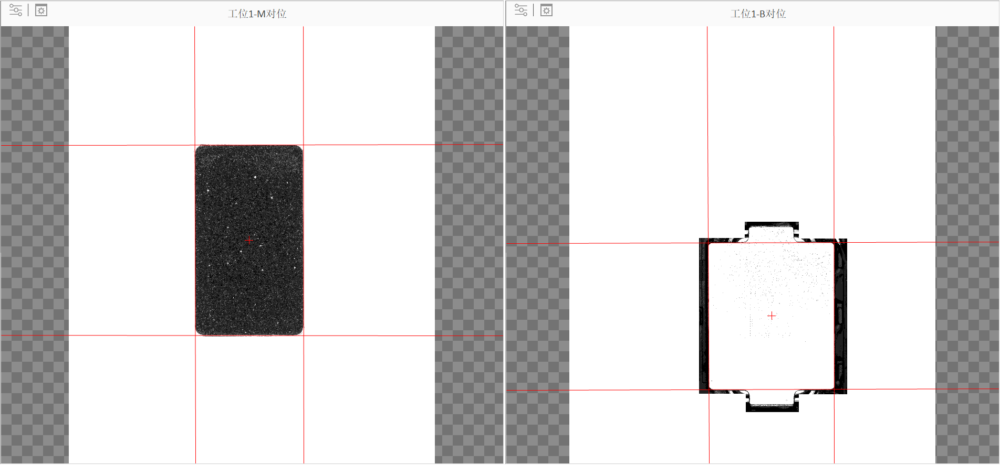